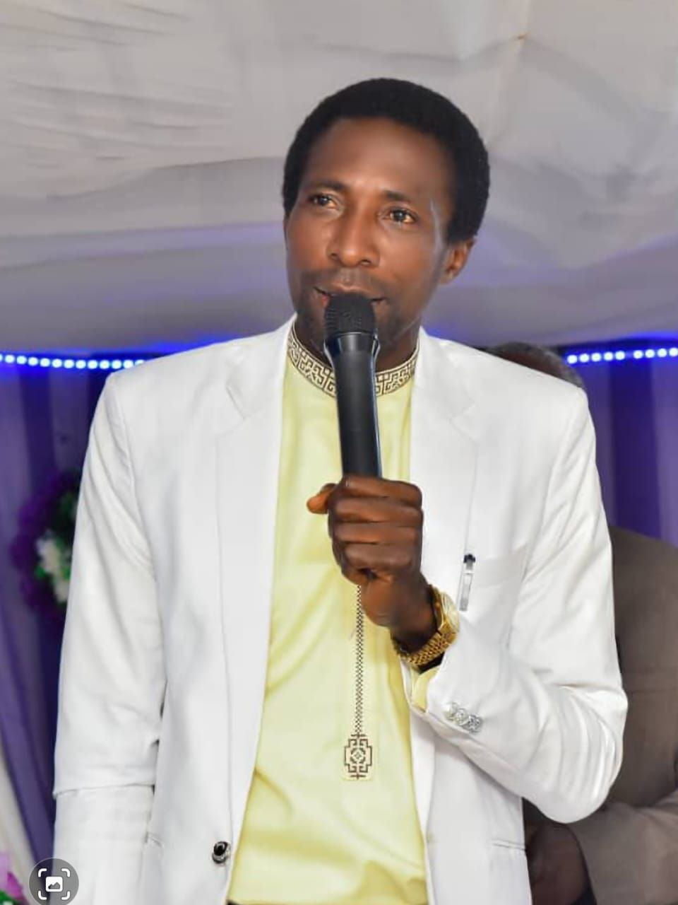
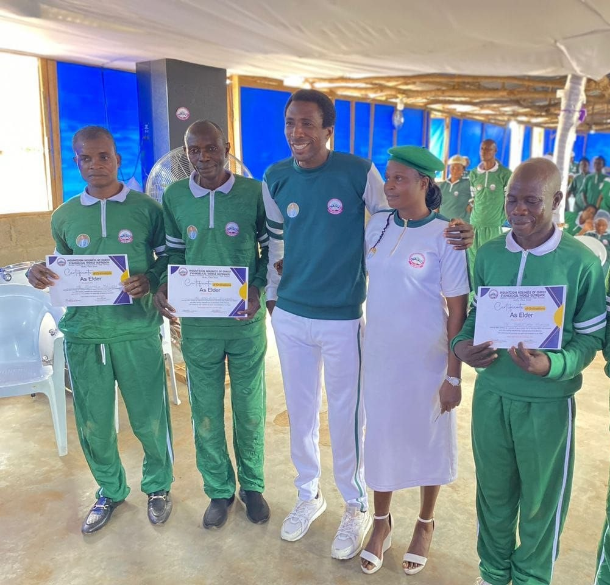
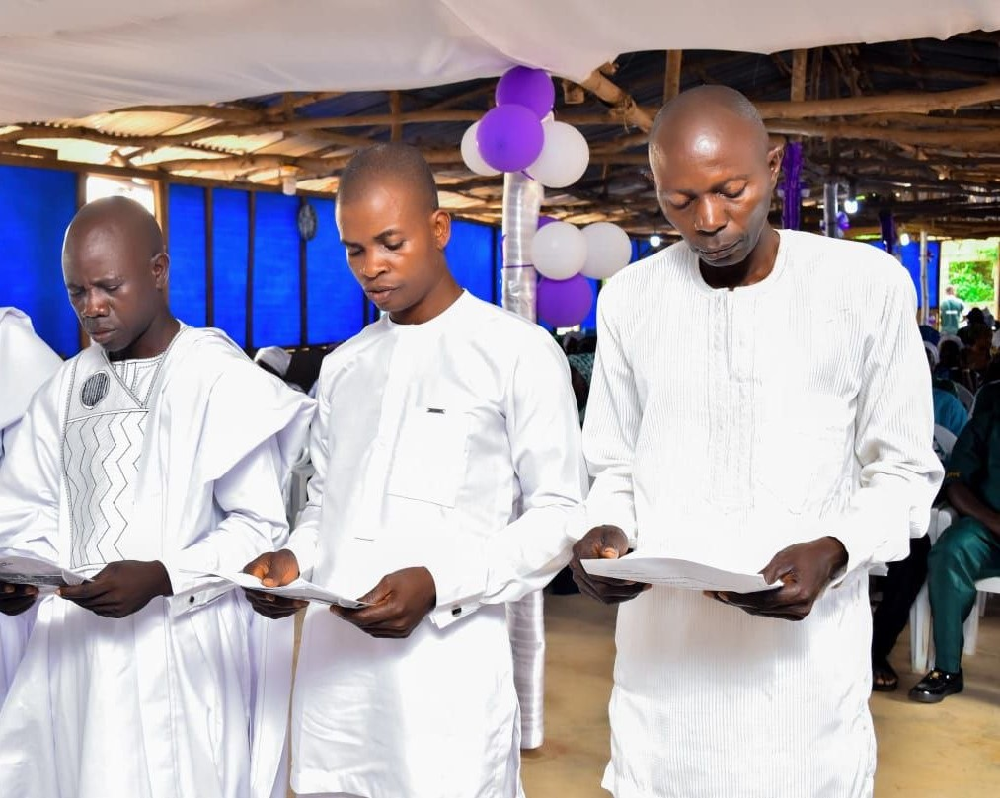
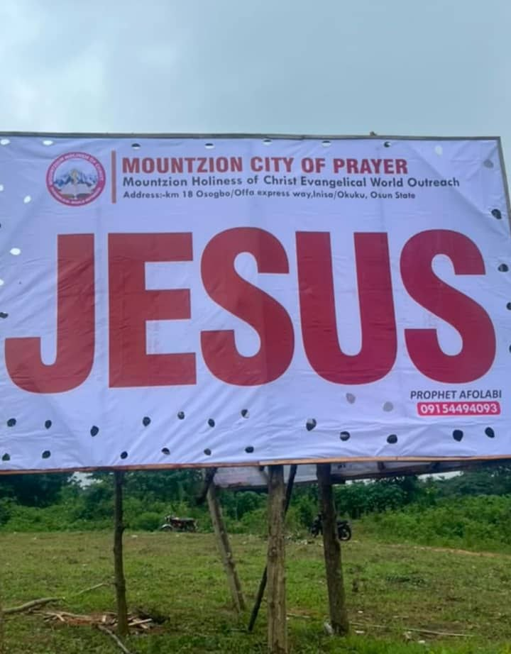

Sunday worship
Sunday · 7:00–10:00 AMWorkers’ meeting begins at 6:30 AM.
Join Mount Zion church in Okuku or Ikirun, Osun State, for worship, the Word, and prayer.




Workers’ meeting begins at 6:30 AM.
Behind Oyinlola Comprehensive High School, Okuku, Osun State.
Get directions ↗KM 18 Osogbo–Offa Expressway, Osun State, Nigeria.
Search map ↗Around Ireti Hospital, Eweta, Ikirun, Osun State.
Get directions ↗Map links search the written addresses. Message us on WhatsApp for a precise pin before travelling.
Read a short devotional, follow a focused three-night prayer plan, or send a personal prayer request to the ministry.
Support the work of Mount Zion by bank transfer. Confirm the recipient shown in your banking app before sending.
Account name: Afolabi Olaniyi
Confirm the displayed recipient name before paying.
Confirm the displayed recipient name before paying.
For a receipt or questions about giving, message the church on WhatsApp.
Connect with Mount Zion
For service questions, prayer requests, and testimonies, reach us directly. Follow the channels below for updates.
YouTube will be added when you share the channel link.